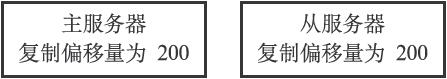
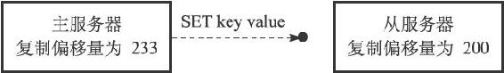
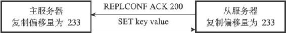

<!DOCTYPE html>
<html lang="zh-CN">
<head>
<meta charset="utf-8">
<meta name="viewport" content="width=device-width, initial-scale=1">
<title>105-15.7_心跳检测</title>
<link id="theme-css" rel="stylesheet" href="../../../../../../../../themes/github.css">
</head>
<body class="done">
<p>15.7 心跳检测</p>
<p>在命令传播阶段，从服务器默认会以每秒一次的频率，向主服务器发送命令：</p>
<hr />
<blockquote>
<p>REPLCONF ACK <replication\_offset>  </p>
</blockquote>
<hr />
<p>其中replication_offset是从服务器当前的复制偏移量。</p>
<p>发送REPLCONF ACK命令对于主从服务器有三个作用：</p>
<p>·检测主从服务器的网络连接状态。</p>
<p>·辅助实现min-slaves选项。</p>
<p>·检测命令丢失。</p>
<p>以下三个小节将分别介绍这三个作用。</p>
<p>15.7.1 检测主从服务器的网络连接状态</p>
<p>主从服务器可以通过发送和接收REPLCONF ACK命令来检查两者之间的网络连接是否正常：如果主服务器超过一秒钟没有收到从服务器发来的REPLCONF ACK命令，那么主服务器就知道主从服务器之间的连接出现问题了。</p>
<p>通过向主服务器发送INFO replication命令，在列出的从服务器列表的lag一栏中，我们可以看到相应从服务器最后一次向主服务器发送REPLCONF ACK命令距离现在过了多少秒：</p>
<hr />
<blockquote>
<p>127.0.0.1:6379&gt; INFO replication<br />
# Replication<br />
role:master<br />
connected_slaves:2<br />
slave0:ip=127.0.0.1,port=12345,state=online,offset=211,lag=0 # <br />
刚刚发送过 REPLCONF ACK<br />
命令<br />
slave1:ip=127.0.0.1,port=56789,state=online,offset=197,lag=15 # 15<br />
秒之前发送过REPLCONF ACK<br />
命令<br />
master_repl_offset:211<br />
repl_backlog_active:1<br />
repl_backlog_size:1048576<br />
repl_backlog_first_byte_offset:2<br />
repl_backlog_histlen:210   </p>
</blockquote>
<hr />
<p>在一般情况下，lag的值应该在0秒或者1秒之间跳动，如果超过1秒的话，那么说明主从服务器之间的连接出现了故障。</p>
<p>15.7.2 辅助实现min-slaves配置选项</p>
<p>Redis的min-slaves-to-write和min-slaves-max-lag两个选项可以防止主服务器在不安全的情况下执行写命令。</p>
<p>举个例子，如果我们向主服务器提供以下设置：</p>
<hr />
<blockquote>
<p>min-slaves-to-write 3<br />
min-slaves-max-lag 10  </p>
</blockquote>
<hr />
<p>那么在从服务器的数量少于3个，或者三个从服务器的延迟（lag）值都大于或等于10秒时，主服务器将拒绝执行写命令，这里的延迟值就是上面提到的INFO replication命令的lag值。</p>
<p>15.7.3 检测命令丢失</p>
<p>如果因为网络故障，主服务器传播给从服务器的写命令在半路丢失，那么当从服务器向主服务器发送REPLCONF ACK命令时，主服务器将发觉从服务器当前的复制偏移量少于自己的复制偏移量，然后主服务器就会根据从服务器提交的复制偏移量，在复制积压缓冲区里面找到从服务器缺少的数据，并将这些数据重新发送给从服务器。</p>
<p>举个例子，假设有两个处于一致状态的主从服务器，它们的复制偏移量都是200，如图15-23所示。</p>
<p></p>
<p>图15-23 主从服务器处于一致状态</p>
<p>如果这时主服务器执行了命令SET key value（协议格式的长度为33字节），将自己的复制偏移量更新到了233，并尝试向从服务器传播命令SET key value，但这条命令却因为网络故障而在传播的途中丢失，那么主从服务器之间的复制偏移量就会出现不一致，主服务器的复制偏移量会被更新为233，而从服务器的复制偏移量仍然为200，如图15-24所示。</p>
<p></p>
<p>图15-24 主从服务器处于不一致状态</p>
<p>在这之后，当从服务器向主服务器发送REPLCONF ACK命令的时候，主服务器会察觉从服务器的复制偏移量依然为200，而自己的复制偏移量为233，这说明复制积压缓冲区里面复制偏移量为201至233的数据（也即是命令SET key value）在传播过程中丢失了，于是主服务器会再次向从服务器传播命令SET key value，从服务器通过接收并执行这个命令可以将自己更新至主服务器当前所处的状态，如图15-25所示。</p>
<p></p>
<p>图15-25 主服务器向从服务器补发缺失的数据</p>
<p>注意，主服务器向从服务器补发缺失数据这一操作的原理和部分重同步操作的原理非常相似，这两个操作的区别在于，补发缺失数据操作在主从服务器没有断线的情况下执行，而部分重同步操作则在主从服务器断线并重连之后执行。</p>
<blockquote>
<p>Redis 2.8版本以前的命令丢失</p>
<p>REPLCONF ACK命令和复制积压缓冲区都是Redis 2.8版本新增的，在Redis 2.8版本以前，即使命令在传播过程中丢失，主服务器和从服务器都不会注意到，主服务器更不会向从服务器补发丢失的数据，所以为了保证复制时主从服务器的数据一致性，最好使用2.8或以上版本的Redis。</p>
</blockquote>
<style>
#nav-btn {
  position: fixed; top: 10px; left: 10px; z-index: 1000;
  width: 38px; height: 38px; border-radius: 50%;
  background: rgba(127,127,127,.3);
  -webkit-backdrop-filter: blur(4px); backdrop-filter: blur(4px);
  display: flex; align-items: center; justify-content: center;
  cursor: pointer; transition: background .2s ease;
  border: 1px solid rgba(255,255,255,.25);
}
#nav-btn:hover, #nav-btn.open {
  background: rgba(0,0,0,.7); border-color: rgba(255,255,255,.5);
}
#nav-btn svg {
  width: 20px; height: 20px; fill: none; stroke: #fff; stroke-width: 1.8;
  stroke-linecap: round; stroke-linejoin: round;
  filter: drop-shadow(0 1px 2px rgba(0,0,0,.6));
}
#nav-panel {
  position: fixed; top: 0; left: 0; bottom: 0; z-index: 999;
  width: 260px; transform: translateX(-100%);
  visibility: hidden;
  /* 收回时 transform 动画结束后再隐藏，避免移出后边缘残留 1px 竖线 */
  transition: transform .25s ease, visibility 0s .25s;
  background: var(--nav-bg, rgba(255,255,255,.95));
  color: var(--nav-fg, #555);
  -webkit-backdrop-filter: blur(8px); backdrop-filter: blur(8px);
  box-shadow: 2px 0 16px rgba(0,0,0,.18);
  display: flex; flex-direction: column;
  font-size: 13px; font-family: Arial, sans-serif;
}
#nav-panel.open {
  transform: translateX(0);
  visibility: visible;
  transition: transform .25s ease, visibility 0s;
}
#nav-panel .nav-head {
  padding: 14px 16px 10px; font-size: 14px; font-weight: 600;
  color: var(--nav-fg, #555);
  border-bottom: 1px solid color-mix(in srgb, var(--nav-fg, #555) 14%, transparent);
}
#nav-panel .nav-tree {
  flex: 1; overflow-y: auto; padding: 8px 8px 24px; margin: 0;
  list-style: none; box-sizing: border-box;
}
#nav-panel ul { list-style: none; margin: 0; padding: 0 0 0 14px; }
#nav-panel .nav-dir {
  padding: 2px 0; cursor: pointer; color: var(--nav-fg, #555);
  white-space: nowrap; overflow: hidden; text-overflow: ellipsis;
}
#nav-panel .nav-dir-label::before {
  content: "▾"; display: inline-block; width: 14px;
  color: color-mix(in srgb, var(--nav-fg, #555) 60%, transparent);
  font-size: 10px; vertical-align: 1px;
}
#nav-panel .nav-dir.collapsed > .nav-dir-label::before { content: "▸"; }
#nav-panel .nav-dir.collapsed > ul { display: none; }
#nav-panel .nav-dir-label:hover { color: var(--nav-fg, #111); }
#nav-panel .nav-file {
  display: block; padding: 3px 6px; margin: 1px 0;
  border-radius: 5px; color: var(--nav-fg, #444); text-decoration: none;
  white-space: nowrap; overflow: hidden; text-overflow: ellipsis;
  line-height: 1.45;
}
#nav-panel .nav-file:hover {
  background: color-mix(in srgb, var(--nav-fg, #555) 9%, transparent);
}
#nav-panel .nav-file.active {
  background: color-mix(in srgb, var(--nav-fg, #555) 16%, transparent);
  color: var(--nav-fg, #111); font-weight: 600;
}
#nav-panel .nav-empty {
  padding: 8px; color: color-mix(in srgb, var(--nav-fg, #888) 70%, transparent);
}
</style>
<button id="nav-btn" type="button" aria-label="文件树" title="文件树">
<svg viewBox="0 0 24 24" xmlns="http://www.w3.org/2000/svg">
<path d="M3 6a2 2 0 0 1 2-2h3l2 2h9a2 2 0 0 1 2 2v9a2 2 0 0 1-2 2H5a2 2 0 0 1-2-2z"/>
</svg>
</button>
<div id="nav-panel">
<div class="nav-head">&nbsp;</div>
<ul class="nav-tree"><li class="nav-empty">加载中...</li></ul>
</div>
<script>
(function () {
  var btn = document.getElementById("nav-btn");
  var panel = document.getElementById("nav-panel");
  if (!btn || !panel) return;
  // 复用当前主题的 --bg-color / --text-color 给面板配色（没有则回退默认浅色）
  var hexToRgb = function (hex) {
    var h = String(hex).trim().replace("#", "");
    if (h.length === 3) { h = h[0] + h[0] + h[1] + h[1] + h[2] + h[2]; }
    if (!/^[0-9a-fA-F]{6}$/.test(h)) return null;
    var n = parseInt(h, 16);
    return (n >> 16 & 255) + "," + (n >> 8 & 255) + "," + (n & 255);
  };
  var refreshNavTheme = function () {
    var cs = getComputedStyle(document.body);
    var bg = cs.getPropertyValue("--bg-color").trim();
    var fg = cs.getPropertyValue("--text-color").trim();
    var rgb = hexToRgb(bg);
    if (rgb) panel.style.setProperty("--nav-bg", "rgba(" + rgb + ",.92)");
    if (fg) panel.style.setProperty("--nav-fg", fg);
  };
  refreshNavTheme();
  window.addEventListener("pkm-theme-applied", refreshNavTheme);
  var toggle = function () {
    panel.classList.toggle("open");
    btn.classList.toggle("open");
  };
  btn.addEventListener("click", function (e) { e.stopPropagation(); toggle(); });
  document.addEventListener("click", function (e) {
    if (panel.classList.contains("open") &&
        !panel.contains(e.target) && e.target !== btn) toggle();
  });
  // 当前页面到站点根的相对前缀（由 site-tree.json 的相对路径反推）
  var base = "../../../../../../../../site-tree.json".replace(/site-tree\.json$/, "");
  // 当前页面相对站点根的路径（用于高亮）
  var curRel = decodeURIComponent(location.pathname).replace(/^\//, "");
  // 首页（站点根 index.html）时链接一律新标签页打开，不打断首页音乐播放
  var isHome = /index\.html$/.test(curRel) || curRel.replace(/\/$/, "").split("/").length === 1;
  fetch("../../../../../../../../site-tree.json")
    .then(function (r) { return r.json(); })
    .then(function (root) {
      var box = panel.querySelector(".nav-tree");
      box.innerHTML = "";
      if (!root.children || !root.children.length) {
        box.innerHTML = '<li class="nav-empty">暂无文件</li>';
        return;
      }
      (root.children || []).forEach(function (c) { box.appendChild(buildNode(c, 0)); });
      expandActive(box);
    })
    .catch(function () {
      panel.querySelector(".nav-tree").innerHTML =
        '<li class="nav-empty">文件树加载失败</li>';
    });
  function buildNode(node, depth) {
    var li = document.createElement("li");
    if (node.type === "dir") {
      li.className = "nav-dir" + (depth > 0 ? " collapsed" : "");
      var label = document.createElement("span");
      label.className = "nav-dir-label";
      label.textContent = node.name;
      label.addEventListener("click", function () {
        li.classList.toggle("collapsed");
      });
      li.appendChild(label);
      var ul = document.createElement("ul");
      (node.children || []).forEach(function (c) { ul.appendChild(buildNode(c, depth + 1)); });
      li.appendChild(ul);
    } else {
      var a = document.createElement("a");
      a.className = "nav-file";
      a.href = base + node.rel;
      if (isHome) a.target = "_blank";
      a.textContent = node.name;
      if (node.rel === curRel) a.classList.add("active");
      li.appendChild(a);
    }
    return li;
  }
  function expandActive(box) {
    var a = box.querySelector("a.active");
    if (!a) return;
    var p = a.parentElement;
    while (p && p !== box) {
      if (p.classList && p.classList.contains("nav-dir")) {
        p.classList.remove("collapsed");
      }
      p = p.parentElement;
    }
  }
})();
</script>
<style>
#toc-btn {
  position: fixed; top: 10px; left: 56px; z-index: 1000;
  width: 38px; height: 38px; border-radius: 50%;
  background: rgba(127,127,127,.3);
  -webkit-backdrop-filter: blur(4px); backdrop-filter: blur(4px);
  display: flex; align-items: center; justify-content: center;
  cursor: pointer; transition: background .2s ease;
  border: 1px solid rgba(255,255,255,.25);
}
#toc-btn:hover, #toc-btn.open {
  background: rgba(0,0,0,.7); border-color: rgba(255,255,255,.5);
}
#toc-btn svg {
  width: 20px; height: 20px; fill: none; stroke: #fff; stroke-width: 1.8;
  stroke-linecap: round; stroke-linejoin: round;
  filter: drop-shadow(0 1px 2px rgba(0,0,0,.6));
}
#toc-panel {
  position: fixed; top: 58px; left: 10px; z-index: 1000;
  width: 240px; max-height: 60vh; overflow-y: auto;
  background: var(--nav-bg, rgba(255,255,255,.95));
  color: var(--nav-fg, #555);
  -webkit-backdrop-filter: blur(8px); backdrop-filter: blur(8px);
  box-shadow: 0 4px 24px rgba(0,0,0,.18);
  border-radius: 10px; padding: 6px;
  display: none; font-size: 13px; font-family: Arial, sans-serif;
}
#toc-panel.open { display: block; }
#toc-panel .toc-list {
  list-style: none; margin: 0; padding: 0;
}
#toc-panel ul { list-style: none; margin: 0; padding: 0 0 0 12px; }
#toc-panel li { margin: 1px 0; }
#toc-panel a {
  display: block; padding: 3px 8px; border-radius: 5px;
  color: var(--nav-fg, #444); text-decoration: none;
  white-space: nowrap; overflow: hidden; text-overflow: ellipsis;
}
#toc-panel a:hover {
  background: color-mix(in srgb, var(--nav-fg, #555) 9%, transparent);
}
#toc-panel a.active {
  background: color-mix(in srgb, var(--nav-fg, #555) 16%, transparent);
  color: var(--nav-fg, #111); font-weight: 600;
}
#toc-panel .toc-empty {
  padding: 8px; color: color-mix(in srgb, var(--nav-fg, #888) 70%, transparent);
}
</style>
<button id="toc-btn" type="button" aria-label="页面目录" title="页面目录">
<svg viewBox="0 0 24 24" xmlns="http://www.w3.org/2000/svg">
<path d="M3 6h12M3 12h12M3 18h12"/>
<path d="M17 4l3 3-3 3M17 10l3 3-3 3M17 16l3 3-3 3"/>
</svg>
</button>
<div id="toc-panel"></div>
<script>
(function () {
  var btn = document.getElementById("toc-btn");
  var panel = document.getElementById("toc-panel");
  if (!btn || !panel) return;

  // 复用当前主题背景色给大纲面板配色（与导航面板同一套变量名）
  var hexToRgb = function (hex) {
    var h = String(hex).trim().replace("#", "");
    if (h.length === 3) { h = h[0] + h[0] + h[1] + h[1] + h[2] + h[2]; }
    if (!/^[0-9a-fA-F]{6}$/.test(h)) return null;
    var n = parseInt(h, 16);
    return (n >> 16 & 255) + "," + (n >> 8 & 255) + "," + (n & 255);
  };
  var refreshTocTheme = function () {
    var cs = getComputedStyle(document.body);
    var bg = cs.getPropertyValue("--bg-color").trim();
    var fg = cs.getPropertyValue("--text-color").trim();
    var rgb = hexToRgb(bg);
    if (rgb) panel.style.setProperty("--nav-bg", "rgba(" + rgb + ",.92)");
    if (fg) panel.style.setProperty("--nav-fg", fg);
  };
  refreshTocTheme();
  window.addEventListener("pkm-theme-applied", refreshTocTheme);

  var headings = Array.prototype.slice.call(
    document.querySelectorAll("h1,h2,h3,h4,h5,h6")
  ).filter(function (el) { return el.id; });
  if (!headings.length) {
    btn.style.display = "none";
    return;
  }

  var open = function () { panel.classList.add("open"); btn.classList.add("open"); };
  var close = function () { panel.classList.remove("open"); btn.classList.remove("open"); };
  btn.addEventListener("click", function (e) {
    e.stopPropagation();
    if (panel.classList.contains("open")) close(); else open();
  });
  document.addEventListener("click", function (e) {
    if (panel.classList.contains("open") &&
        !panel.contains(e.target) && e.target !== btn) close();
  });
  document.addEventListener("keydown", function (e) {
    if (e.key === "Escape") close();
  });

  // 按标题级别构建嵌套目录（栈式算法：h1 > h2 > h3 层级缩进）
  var root = document.createElement("ul");
  root.className = "toc-list";
  var stack = [{ level: 0, ul: root }];
  headings.forEach(function (h) {
    var level = parseInt(h.tagName.slice(1), 10);
    var li = document.createElement("li");
    var a = document.createElement("a");
    a.href = "#" + h.id;
    a.textContent = h.textContent;
    li.appendChild(a);
    while (stack.length && stack[stack.length - 1].level >= level) stack.pop();
    var parent = stack[stack.length - 1] || { ul: root };
    parent.ul.appendChild(li);
    var sub = document.createElement("ul");
    li.appendChild(sub);
    stack.push({ level: level, ul: sub });
  });
  panel.appendChild(root);

  // 点击目录项平滑滚动到标题，并更新高亮
  var cur = null;
  var setActive = function (a) {
    if (cur) cur.classList.remove("active");
    cur = a;
    if (cur) cur.classList.add("active");
  };
  panel.addEventListener("click", function (e) {
    var a = e.target.closest("a");
    if (!a) return;
    e.preventDefault();
    var el = document.getElementById(decodeURIComponent(a.getAttribute("href").slice(1)));
    if (!el) return;
    el.scrollIntoView({ behavior: "smooth", block: "start" });
    setActive(a);
  });
  // 滚动时跟随当前章节高亮
  var updateActive = function () {
    var pos = window.scrollY + 80;
    var idx = -1;
    for (var i = 0; i < headings.length; i++) {
      if (headings[i].offsetTop <= pos) idx = i; else break;
    }
    var target = idx >= 0 ? root.querySelector('a[href="#' + headings[idx].id + '"]') : null;
    if (target && target !== cur) setActive(target);
  };
  window.addEventListener("scroll", updateActive, { passive: true });
  updateActive();
})();
</script>
<button id="theme-btn" type="button" aria-label="切换主题" title="切换主题"><svg viewBox="0 0 24 24" xmlns="http://www.w3.org/2000/svg"><path d="M12 3a9 9 0 1 0 0 18c1.1 0 1.5-.8 1.5-1.5S13 18 13.5 18H15a3 3 0 0 0 3-3c0-4.5-3.6-12-6-12z"/><circle cx="7.5" cy="10.5" r="1.2"/><circle cx="12" cy="7.5" r="1.2"/><circle cx="16.5" cy="10.5" r="1.2"/></svg></button><div id="theme-menu"></div>
<style>
#theme-btn {
  position: fixed; top: 10px; right: 10px; z-index: 1000;
  width: 38px; height: 38px; border-radius: 50%;
  background: rgba(127,127,127,.3);
  -webkit-backdrop-filter: blur(4px); backdrop-filter: blur(4px);
  display: flex; align-items: center; justify-content: center;
  cursor: pointer; transition: background .2s ease;
  border: 1px solid rgba(255,255,255,.25);
}
#theme-btn:hover, #theme-btn.open {
  background: rgba(0,0,0,.7); border-color: rgba(255,255,255,.5);
}
#theme-btn svg {
  width: 20px; height: 20px; fill: none; stroke: #fff; stroke-width: 1.8;
  stroke-linecap: round; stroke-linejoin: round;
  filter: drop-shadow(0 1px 2px rgba(0,0,0,.6));
}
#theme-menu {
  position: fixed; top: 56px; right: 10px; z-index: 1000;
  display: none; min-width: 160px; max-height: 70vh; overflow-y: auto;
  background: rgba(255,255,255,.95);
  -webkit-backdrop-filter: blur(8px); backdrop-filter: blur(8px);
  border-radius: 10px; box-shadow: 0 4px 20px rgba(0,0,0,.2);
  padding: 6px; font-size: 13px; font-family: Arial, sans-serif;
}
#theme-menu.open { display: block; }
.theme-item {
  padding: 6px 10px; border-radius: 6px; cursor: pointer;
  color: #333; white-space: nowrap;
}
.theme-item:hover { background: rgba(0,0,0,.08); }
.theme-item.active { background: rgba(0,0,0,.15); font-weight: 600; }
</style>
<script>
(function () {
  var themes = ["github", "newsprint", "night", "phycat-abyss", "phycat-caramel", "phycat-cherry", "phycat-forest", "phycat-mauve", "phycat-mint", "phycat-prussian", "phycat-radiation", "phycat-sakura", "phycat-sky", "phycat-vampire", "pixyll", "vlook-fancy", "vlook-geek", "vlook-hope", "vlook-joint", "vlook-solaris", "vlook-thinking", "whitey"];
  var base = "../../../../../../../../themes/";
  var link = document.getElementById("theme-css");
  var btn = document.getElementById("theme-btn");
  var menu = document.getElementById("theme-menu");
  var saved = null;
  try { saved = localStorage.getItem("pkm-theme"); } catch (e) {}
  var current = (saved && themes.indexOf(saved) > -1) ? saved : "github";
  themes.forEach(function (name) {
    var item = document.createElement("div");
    item.className = "theme-item";
    item.textContent = name;
    item.addEventListener("click", function () { apply(name); hide(); });
    menu.appendChild(item);
  });
  var apply = function (name) {
    current = name;
    link.href = base + name + ".css";
    link.onload = function () {
      try { window.dispatchEvent(new Event("pkm-theme-applied")); } catch (e) {}
    };
    try { localStorage.setItem("pkm-theme", name); } catch (e) {}
    refreshActive();
  };
  var refreshActive = function () {
    var items = menu.querySelectorAll(".theme-item");
    for (var i = 0; i < items.length; i++) {
      items[i].classList.toggle("active", items[i].textContent === current);
    }
  };
  var show = function () { menu.classList.add("open"); btn.classList.add("open"); };
  var hide = function () { menu.classList.remove("open"); btn.classList.remove("open"); };
  btn.addEventListener("click", function () {
    if (menu.classList.contains("open")) { hide(); } else { show(); }
  });
  document.addEventListener("click", function (e) {
    if (!btn.contains(e.target) && !menu.contains(e.target)) { hide(); }
  });
  apply(current);
})();
</script>
<style>
#pkm-lightbox {
  position: fixed; inset: 0; z-index: 9999;
  background: rgba(0, 0, 0, .85);
  display: none; align-items: center; justify-content: center;
  cursor: zoom-out; padding: 4vh 4vw;
}
#pkm-lightbox.open {
  display: flex;
}
#pkm-lightbox img {
  max-width: 92vw; max-height: 92vh;
  box-shadow: 0 8px 48px rgba(0, 0, 0, .55);
  border-radius: 4px;
  background: #fff;
}
</style>
<script>
(function () {
  var box = document.createElement('div');
  box.id = 'pkm-lightbox';
  var boxImg = document.createElement('img');
  box.appendChild(boxImg);
  document.body.appendChild(box);

  function open(src, alt) {
    boxImg.src = src;
    boxImg.alt = alt || '';
    box.classList.add('open');
  }
  function close() {
    box.classList.remove('open');
  }

  box.addEventListener('click', close);
  document.addEventListener('keydown', function (e) {
    if (e.key === 'Escape') close();
  });
  document.addEventListener('dblclick', function (e) {
    var t = e.target;
    if (t && t.tagName === 'IMG' && !t.closest('nav, #nav-btn, #theme-btn, #theme-menu, #pkm-lightbox')) {
      e.preventDefault();
      open(t.currentSrc || t.src, t.alt);
    }
  });
})();
</script>

</body>
</html>